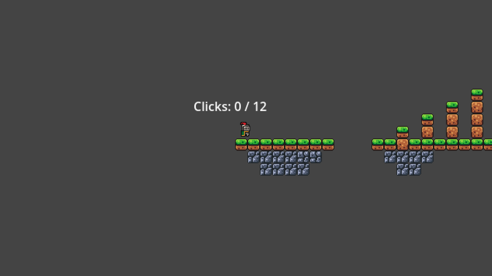

Slack Annoyance
A do-it-all Slack bot made in Python that uses Hack Club AI for sarcastic responses, Last.fm for live music tracking to a channel, welcomes people to certain channels, and /acnhquote for Animal Crossing quotes.
View Project (#slack-annoyance on the Hack Club Slack)

Carpal Tunnel Platformer
A very basic game made in Godot for Hack Club Daydream. We had a theme of 'A Sacrifice must be made'.
Play Game!